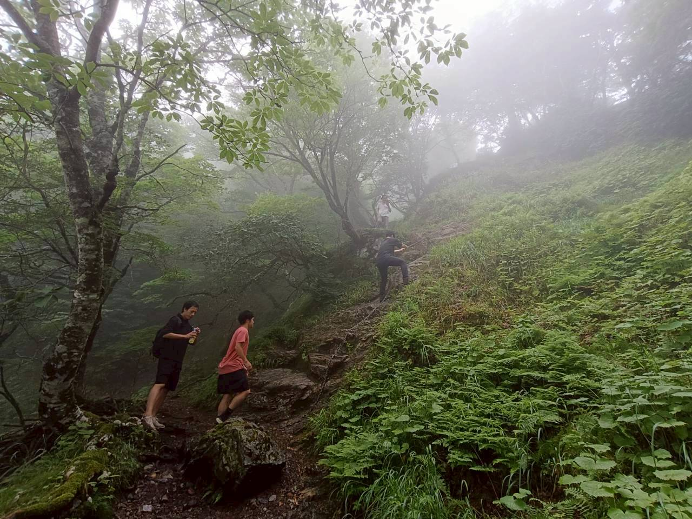
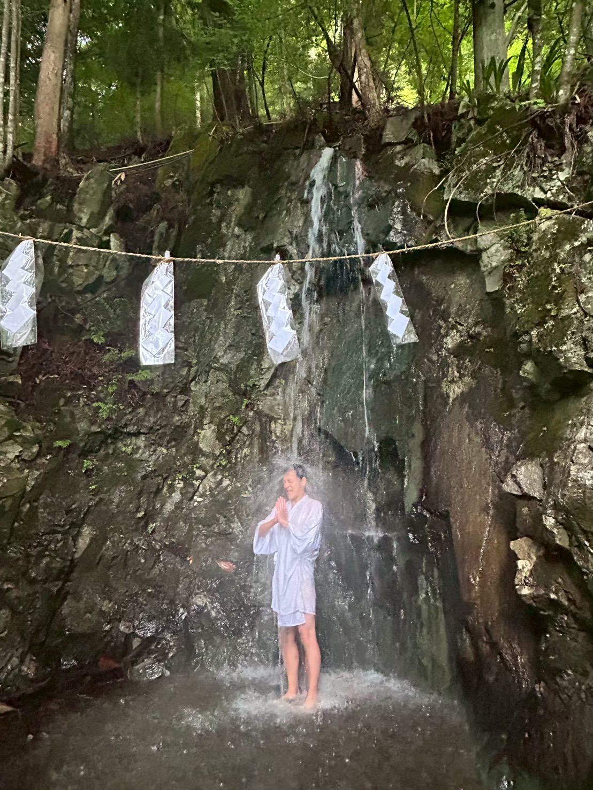
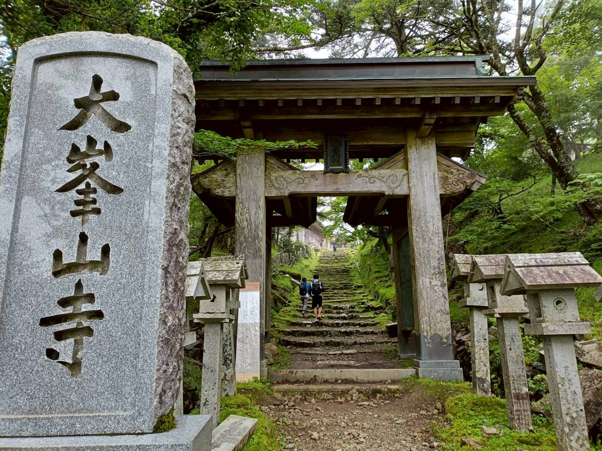
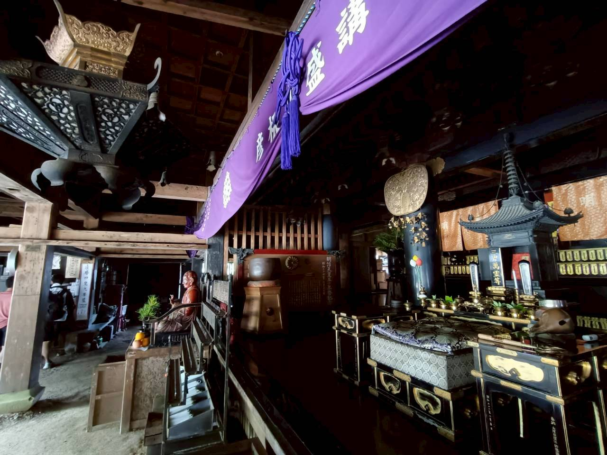
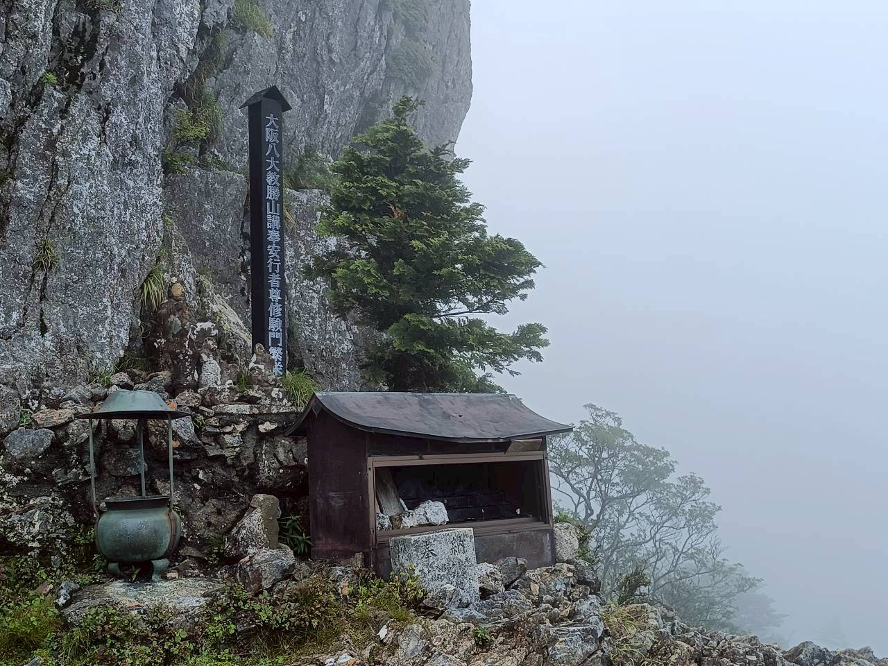
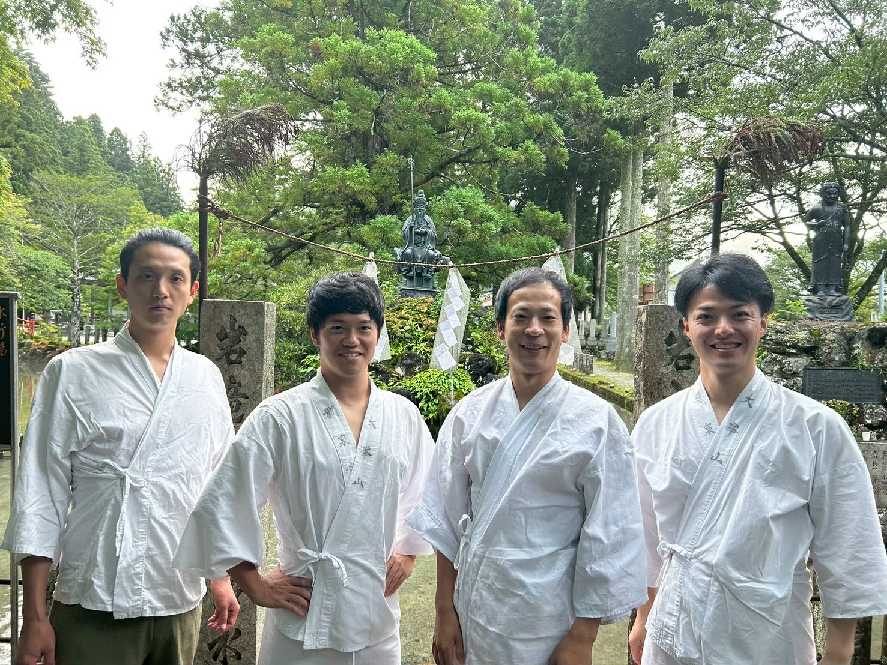

01
日常から離れ、身体へ戻る
天川へ入り、水、火、静けさ、食事などを通して、思考だけではなく身体の感覚へ注意を戻していきました。
WHY WE GATHERED
今回の企画は、天川・大峯という場所へ人を案内するだけのツアーとして始まったものではありません。
日常では、仕事、役割、情報、周囲からの期待に応えることが先になり、自分の身体が何を感じ、何を本当に大切にしたいのかが見えにくくなることがあります。
そこで、北斗さんが大切な仲間を招き、僕が天川側の受入れと現地での場づくりを担い、少人数で大峯へ入りました。
何か特定の答えへ導くのではなく、身体を動かし、仲間の姿を見て、立ち止まり、言葉を交わす。その中で、一人ひとりに何が残るのかを大切にしました。
OUTLINE
行の内容は、季節、天候、参加者の体調、現地の判断等によって変わります。すべての参加者が同じ行を行うものではありません。
THE PROCESS
01
天川へ入り、水、火、静けさ、食事などを通して、思考だけではなく身体の感覚へ注意を戻していきました。
02
山道と行場では、参加者ごとに異なる身体反応や感情が起きました。感じ方を揃えず、怖さも、静けさも、何も感じないことも、その人の体験として扱いました。
03
誰かが先に挑む姿が、後に続く人の集中を生む。自分一人の体験だけでなく、互いの姿が互いの学びになる時間でした。
04
行を終えた後、仲間と感じたことを言葉にしました。山で身体を動かした直後だったからこそ、普段の室内とは違う対話が生まれました。
05
体験をその場だけの感動で終わらせず、仕事、家族、習慣、生き方の中で何を試してみたいかを、それぞれが持ち帰りました。
SCENES






THREE VOICES
実施後、一人ひとりと振り返りインタビューを行い、約2か月後には全員でシェア会も行いました。強く感じた人も、同じようには感じなかった人もいます。すぐに言葉になったことも、日常へ戻ってから少しずつ意味を持ちはじめたこともありました。それぞれの違いを揃えずに、本人の言葉から受け取りました。
VOICE 01
これまでは周囲を巻き込み、燃え上がる炎のようにゼロから一を立ち上げてきた。今は、静かだけれど確かに熱く、深まっていく熾火のようなエネルギーへ移っている感覚がある。
飯島さんは、他の参加者と同じような強い感覚を得たわけではありませんでした。だからこそ、感じ方に正解を置かず、朝の静けさ、護摩の火、仲間の姿、山上で過ごした時間を、自分の体験として丁寧に受け取っていました。
強く感じない自分のまま、静けさや火や仲間の姿を、ちゃんと自分の記憶として持ち帰っていました。
山の道中で受け取った問いをノートに残し、帰宅後も持ち歩いていました。仏教への関心を周囲へ話し、知人の縁から僧侶に会うという行動へ。親に物を贈るだけでなく、共に過ごす時間を大切にしたいという問いも残りました。
約2か月後のシェア会自分では大きな変化として捉えていなくても、周囲からは「以前より話を聞いてくれる」「一度受け入れてくれるようになった」と言われるようになったと語ってくれました。人に期待をかけるのではなく、信じて関わる。その小さな変化が、日常の関係性の中に表れていました。
飯島 佑介さん
VOICE 02
恐怖は、動く前が一番大きかった。実際に登り始めると薄れていった。仕事でも人生でも、選び、行動する覚悟と重なった。
難所で意識的に先頭へ。後に続く仲間が見て判断できるよう、自分の恐怖に向き合う姿を先に見せました。その姿は、別の参加者の集中も高めていました。
本人は、場所だけではなく、前田と北斗さんからその場で受け取った言葉が強く残っていると話してくれました。用意されたツアーとして案内されるより、全員で一緒に行へ入った感覚が価値として残っていました。
怖さは、消えたのではなく、動いたことで形を変えた。山で起きたその実感が、仕事や人生で一歩を出す感覚と重なっていました。
特に残っていたのは、動く前に大きくなる恐怖と、動き始めることで変わっていく身体の実感でした。呼吸へ戻りながら一歩を出すことが、仕事や人生で覚悟を決める感覚と重なっていました。
参加費についても、本人の体験としては「むしろ安い」と受け取っていました。ただし、この評価を全員の答えとはせず、一人の率直な証言として記録します。
約2か月後のシェア会天川に一度入った後、今度は自分が別の人を連れて再訪しました。天川ではできていた気持ちの切り替えが、東京へ戻ると薄れることも率直に話しながら、それでも「あの場所で、この5人で出会ったから今の感覚がある」と受け取っていました。
大谷 幸輝さん
VOICE 03
怖さはあった。それでも一度止まり、呼吸して周りの音を聞くと、怖がっている自分だけでなく、自然を感じている自分もいることに気づいた。
恐怖が消えたのではなく、恐怖以外の感覚も同時に観察できたこと。行場の前に渡した短い比喩が、実際の場面で呼吸や注意の向け方につながっていました。
怖がっている自分だけではなかった。止まり、息をして、周りの音を聞いたとき、同じ身体の中に別の感覚もあることに気づいていました。
強く残っていたのは、行そのものだけではありません。一緒に越えた仲間と、直後に感じたことを話した時間。山で身体を動かした後だからこそ、普段の室内とは違う深さの対話になっていました。
その後のインタビューでは、苦行をただ耐えるものではなく、何に向かうのかというビジョンと結びついた実践として捉え直していました。
約2か月後のシェア会登拝前に北斗さんから受け取った「発言」という一語が、今も問いとして残っていると話してくれました。発言の内容だけでなく、発言することそのもの、自分の考えを外へ出すこと、それが世界の中で形になっていくことへの向き合い方が変わり始めていました。
高野 信太朗さん
AFTER TWO MONTHS
約2か月後、参加者と北斗さん、前田でオンラインのシェア会を行いました。そこで見えたのは、劇的に人生が変わったという物語ではありません。普段の言葉、仕事、人との関わり方、天川へ戻りたい感覚の中に、体験が静かに残っているということでした。
直後の感想だけでは見えなかった変化もありました。本人が大きな変化だと捉えていないことを、周囲が先に感じ取っている。天川で受け取った感覚が、東京へ戻ると薄れながらも、また戻る理由になる。そうした時間差のある変化を確かめること自体が、この企画の大切な一部になりました。
登拝前に受け取った一語が、終わった後も問いとして残り続ける。答えを渡すのではなく、その人の中で熟成し、発言や仕事への向き合い方を照らす言葉が生まれていました。
相手に期待をかけて変えようとするのではなく、まず受け入れ、信じる方へ。本人が強く意識していなくても、周囲の反応として変化が返ってきていました。
天川は一度行って終わる場所ではなく、誰かを連れて戻りたくなる場所になりました。実際に、参加後に別の人を連れて天川へ戻る動きも生まれました。
北斗さん自身も、瞑想や呼吸を自然に行うようになり、社会に自分を合わせるより、自分のあり方から社会へ関わる感覚が強くなったと語りました。場を開く人にも、場は作用していました。
WHAT WE LEARNED
三人の答えは、熾火、覚悟、恐怖の観察、そして日常の中で続く小さな変化として、それぞれ異なりました。
場が身体を開き、身体経験が仲間との信頼を生み、問いと言葉が体験を本人固有の意味へ変え、時間を置いた振り返りが日常の変化を見つける入口をつくる。
三人に共通していたのは、北斗さんとの信頼を入口に天川へ来たこと。そして、山や行場だけでなく、仲間の姿、食事、火、水、道中の言葉、終わった後の振り返りまで含めて、体験が残っていたことでした。
一方で、同じように感じなかった人もいました。未知を楽しめた人もいれば、事前情報の少なさに不安を感じた人もいました。概要を受け取っていた人も、細かな行程や現地の体制までは知らなかった人もいました。その違いを消さずに残すことが、第1回の実績を誠実な学びに変えてくれます。
だから次回に必要なのは、すべてを説明して余白を消すことではありません。参加判断に必要な現実情報は全員へ渡し、その上で、どこまで知らずに入るかは本人が選べるようにすることです。
次回も残したいのは、特定の答えへ導くプログラムではありません。本人自身の言葉が生まれるための、場と関係と時間です。
KAORU'S REFLECTION
今回、僕は天川側の受入れ、現地の流れ、問い、対話、振り返りの設計を担いました。事前にはワークブックや問いも準備していました。
ただ、現場で大切だったのは、準備した内容をすべて参加者へ行わせることではありませんでした。身体の状態、場の空気、仲間同士の関係を見ながら、何を出すか、何を出さないか、いつ待つかを選ぶことでした。
三人へのインタビューを通して、僕が届けていたものは、山の案内や長い講義だけではなかったと気づきました。
体験前に観察のための短い補助線を置くこと。体験中は本人の選択を奪わないこと。体験後に、その人自身の言葉が生まれる時間を整えること。そして、時間を置いてもう一度集まり、日常の中で何が残っているのかを確かめること。
同時に、改善すべきことも明確でした。信頼があるからこそ成立した部分を、次回そのまま繰り返してはいけない。参加者が自分で選べるだけの情報、安全に関する合意、体験を味わう余白、誰がどの役割を担うのかは、事前に整える必要があります。
僕は、この働きを「場のコーチング」として、これからさらに磨いていきます。
前田 薫
FOR THE NEXT SESSION
今回は、北斗さんと参加者の間にあった強い信頼、少人数の関係、現場での即興によって成立した部分が多くありました。次回は、即興性や未知の余白を消すのではなく、それを安全に選べる土台を整えます。
日時、行程、費用、宿泊、役割、身体負荷、主要なリスクなど、参加判断に必要な情報を統一して共有します。
詳細まで知るか、核心部分を知らずに入るかを、参加者自身が選べるようにします。
安全責任者、中止判断、体調確認、行への参加・不参加の選択を明確にします。
強く感じても、何も感じなくてもよい。その人に起きていることを、そのまま扱います。
主要な体験後に、書く、座る、歩く、何もしないことを選べる時間を確保します。
直後の感動だけでなく、一か月後・三か月後にも日常の変化を確認し、体験を本人の言葉として記録します。
A PLACE TO RETURN
インタビューとシェア会では、人生の転換点に帰りたい、来年も大峯へ行きたい、大阪へ戻る時に天川へ足を運びたい、誰かを連れてもう一度訪れたい、という言葉が生まれました。
参加者を囲い込むためのコミュニティを急いでつくるのではなく、もう一度帰りたい時に帰れること。仲間と再会できること。前回とは違う自分で、同じ山へ入れること。
その積み重ねの先に、天川を第二の故郷と感じる人たちのつながりが、結果として育っていくと考えています。
HOSTS
天川村を拠点に、人と土地、身体経験、問い、対話をつなぐ「場のコーチング」を実践。参加者が決められた答えを受け取るのではなく、自分自身の言葉と日常の一歩を持ち帰れる場を設計している。株式会社なんぼでも代表。
若者の挑戦や海外経験を支援しながら、人と人、人と場所の縁をつないでいる。今回、大切な仲間へ声をかけ、天川・大峯へ入る理由と関係をつくった。
WHAT'S NEXT
現在、次回の安全、事前案内、体験設計、振り返り、継続導線を見直しています。次回の日程と募集方法は、決まり次第お知らせします。
もしこの記録を読んで、胸の奥が少し動いたなら。
それは、今すぐ参加する合図ではなく、いつか自分の足で天川へ帰るための、小さな入口かもしれません。